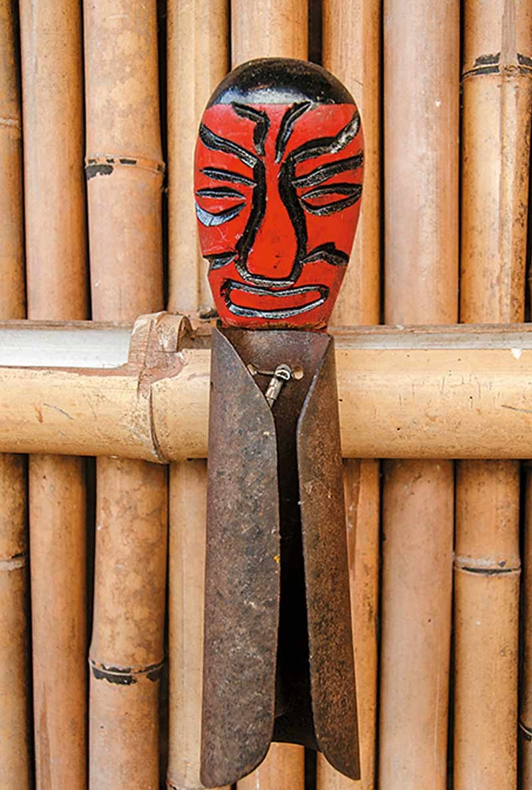

附近景點
知本
1.三和海濱公園
看到顯眼的水藍色海馬造型入口立碑，就知道來到了三和海濱公園。
看到顯眼的水藍色海馬造型入口立碑，就知道來到了三和海濱公園。

海濱公園內採用先進的太陽能及風力發電設施，供應夜間公園照明、或部落重要慶典使用。
風力發電的風車非常具有特色，陣陣海風吹來，風車就如歌行板地轉動起來，再加上椰影婆娑、舟影點點，眼前景致充滿異國風情。
2.小野柳
小野柳位於富岡漁港北方的海域，是東部海岸最南端的風景據點，因地形和岩石在種類上，與北關的野柳外貌相似，因此被稱為「小野柳」。
園區內設有遊客中心、賣店、露營區與海邊步道等，來到這裡除了欣賞不同類型的奇岩怪石、觀海聽浪、賞魚戲水之外，天氣晴朗時更能眺望約33公里外的綠島。
在此露營體驗在夜色下聽著海聲入睡的新奇感受。經過地殼抬升與海洋千年侵蝕沖刷下，造就了壯觀吸引旅人眼光的豆腐岩、蜂窩岩，而因岩層風化打造出各種奇岩怪石。
其中以大眼蛙、駱駝石、龜陣岩最為著名，是來小野柳必拍的地景之一。
3.太麻里金針山
位於太麻里的金針山是座名聞遐邇的賞花名勝，除了金針花季之外，四季造訪皆能觀賞到滿山遍野的美景。
為了方便遊客觀覽金針山，整個農業區規畫出了三條主要的登山步道。

經過迎曦樓、湛藍若洗、孟宗竹道、遊客中心。讓您在觀景台眺望太平洋也能觀看壯闊日出，金針山一年四季的不同美景與自然生態就等你來細細體會。
4.卡地布文化園區
離知本火車站不遠的地方，卡地布部落傳統文化園區就坐落在附近。
園區內設置有瞭望台、巴拉冠(卡地布青年會所)、三大氏族祖靈屋(Mavaliw瑪法琉、Pakaruku巴卡魯固、Ruvaniaw羅法尼耀)、達古範(青少年聚會所)等傳統建築。要留意巴拉冠嚴禁婦女和小孩進入，達古範則女賓止步。
除了傳統建築外，也有活動中心，作為部落的辦公場所，傳統屋是準備讓遊客體驗傳統文化的地方。
園區設有導覽人員可為遊客做解說，帶領大家深入認識卑南族的歷史人文，走訪融入原住民生活的不同宗教聖地
也可品嚐當地的釋迦，或是前往當地的餐飲店，豐富新鮮自然的原住民佳餚，美味的料理配上熱鬧的原住民音樂和舞蹈，都令人口齒留香、難以忘懷。
5.白玉瀑布
白玉瀑布位於知本溫泉區域內，原名白玉瓏，是一個十分容易到達欣賞的瀑布，只要由忠義堂附近的產業道路往樂山方向前進約50公尺就可看見停車場及步道。
白玉瀑布雖然規模不大，但因其位於知本溫泉區附近，秀麗且容易前往的特色，也吸引不少遊客前來觀光。
6.知本森林遊樂區
知本森林遊樂區位於知本溪的中游，若從知本火車站出發，可以自台九線開始銜接194縣道，走龍泉路之後越過一座橋就會抵達。
知本森林遊樂區宛如一間生態教室，沿著區內的林蔭步道行走，可以隨著沿路的解說牌了解各種動植物，尤以鳥類資源最豐富，是臺東市郊賞鳥的最佳地點。
野營活動場適合露營，與三五好友來個輕鬆的野餐，也是親近自然的好選擇。在這裡，吸一口充滿芬多精的新鮮空氣，聆聽鳥叫蟲鳴，絕對是最美好的享受。
知本森林遊樂區面積大約110公頃，海拔高度大約於110-650公尺之間，全年氣候溫暖濕潤，園區內主要景觀為常綠闊葉次生林。
遊樂區三面環山，園內設施有觀林吊橋、森林步道、水流腳底按摩步道、溫泉泡腳池、藥用植物園、遊客服務中心等，步道沿線皆設有解說牌，提供各種動植物介紹。
因位於臺東市郊區並鄰近知本溫泉區，是登山、健行、賞鳥、賞蝶、學術研究、遊憩及森林浴的最佳場所，亦為假日郊遊的好去處。
7.國立臺灣史前文化博物館
國立臺灣史前文化博物館，一個兼具理性與感性，又不失自然美景的地方，它是國內第一座以史前和原住民文化為主題的博物館，也是第一座包含博物館、考古遺址和自然生態公園的博物館，更是東海岸第一座國家級的博物館。
史前館建築略呈長方形，由世界知名的後現代主義建築大師Michael Graves設計，造型融合閩南、客家、原住民文化，風格獨具一樹。

從史前文化的人形意示圖了解到當時的生活是靠什麼工具如何生存的。

而這個展覽區是在講當下那個年代的動物是有哪幾隻，如何跟人類一起共生共存的。

這個史前博物館不僅能讓大人及小孩了解到史前文化，還能讓彼此之間的親子互動教學更有意義。

8.深山亞都渡假會館
坐落於太麻里金針山海拔1000公尺處，當初園主想圓一個夢，夢想有一天能離群索居、歸隱深山，在機緣之下來到金針山，即為環境動容，無法言表深刻又驚愛的心情，便放棄都市生活、放下一切，從此定居下來享受深山的幽靜、清新。

愛戀在1000公尺的相約，深山亞都得天獨厚的環境從觀海亭可觀賞『日出』從太平洋海面緩緩升起，四季變化的花海令人著迷，起霧的午後，山嵐從眼前飄過，讓人彷彿踩在雲端，當夜晚來臨時一輪明月又從海平面升起『月升』的畫面叫人永生難忘，自在人生、享受生活，就從這裡開始吧!
9.鐵花村
台東火車站舊址對面的「鐵花村」原是鐵路局舊倉庫，在2010年由台東音樂人和藝術工作者改建成音樂聚落，每逢假日就會假日市集可以逛逛

鐵花村裡每週四～六的晚上8點至10點，星期天的下午4點至6點，都有常態性的表演，其實非常適合到台東慢活旅程中的中繼站，可以來到這裡點上一杯飲料聽著現場演唱，享受大自然與音樂的結合感！

鐵花村以原住民音樂、歌聲與在地特色共同打造的音樂聚落
大草坪旁的慢市集販賣了許多道地的或手工小物，店鋪小小卻應有盡有蜂蜜、茶及米...等

台東知名農作土產還網羅眾多台東藝術工作者的創意作品像以漂流木製成的飾品擺設、創意樂器及原住民樂者的的唱片等等，重點是老闆也都相當熱情唷！
 333桃園市龜山區德明路5號
333桃園市龜山區德明路5號 TEL:(03)1234-5678
TEL:(03)1234-5678 EMAIL:123456789@gmail.com
EMAIL:123456789@gmail.com